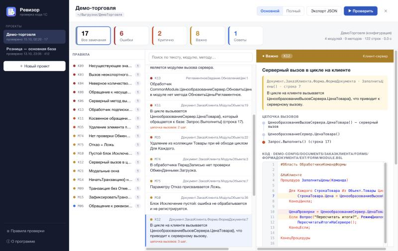
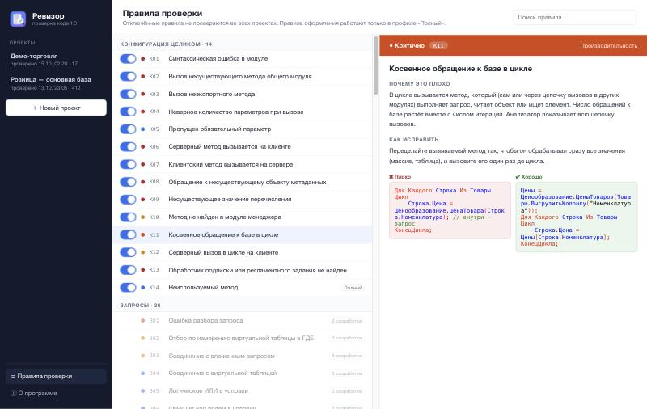

Анализатор кода конфигураций 1С: проверяет всю конфигурацию целиком по выгрузке в файлы — ошибки между модулями, клиент-сервер, обращения к базе в цикле через цепочку вызовов, стандарты 1С:ИТС.
Метод общего модуля переименовали или сделали неэкспортным — вызовы в формах и объектах остались и падают у пользователя.
Клиентская форма вызывает серверный модуль, серверный код — клиентский. Или в цикле на клиенте каждая итерация ходит на сервер.
Цикл вызывает «безобидную» функцию, а та через три модуля выполняет запрос. В коде цикла запроса не видно.
Объекты, реквизиты, табличные части, перечисления, формы, общие модули и их флаги, подписки и задания.
Собственный парсер: дерево разбора, препроцессор, #Вставка/#Удаление расширений. 76 тыс. реальных модулей без ложных ошибок.
Методы, параметры, директивы, вызовы в циклах, обращения к базе. Дерево сворачивается — память не растёт.
Межмодульные и локальные правила, важность, цепочка вызовов, код с подсветкой и объяснение.

Счётчики по важности работают как фильтры; правила, список замечаний и подробности: цепочка вызовов, код с подсветкой как в конфигураторе, объяснение правила. Демо-выгрузка с вымышленными данными.
ФормаДокумента, строка 7: в цикле по товарам вызывается ЦенообразованиеВызовСервера.ЦенаТовара().
&НаКлиенте Процедура ЗаполнитьЦены(Команда) Для Каждого СтрокаТовара Из Объект.Товары Цикл СтрокаТовара.Цена = ЦенообразованиеВызовСервера.ЦенаТовара( СтрокаТовара.Номенклатура, Объект.ВидЦены); КонецЦикла; КонецПроцедуры // Ревизор: одна итерация = серверный вызов + запрос. // Исправление: ЦеныТоваров(массив) — один вызов до цикла.
Несуществующие и неэкспортные методы, число параметров, клиент-сервер, объекты метаданных и значения перечислений, обработчики подписок и заданий, обращения к базе через цепочку.
Корректность, транзакции, безопасность, производительность, стандарты 1С:ИТС и каталог диагностик BSL Language Server.
Правила для текстов запросов и проверка таблиц и полей по метаданным конфигурации.
Ошибка Критично Важно Совет — профиль «Основной» без правил оформления, «Полный» — со всеми.

Почему это плохо, как исправить, примеры «плохо» и «хорошо», ссылка на стандарт. Любое правило можно отключить.
Дерево разбора встроенного языка, условия препроцессора, инструкции расширений; устойчив к ошибкам.
Модуль разбирается, проверяется и сворачивается в сводку — большие конфигурации в ограниченной памяти.
Общие модули, менеджеры, глобальные модули, контекст клиента и сервера, модули повторного использования.
По умолчанию половина ядер и мягкий предел памяти: проверка не мешает работать.
Go + Wails: .app для macOS и .exe для Windows без установки зависимостей; консольная утилита для CI.
Проверка вместе с основной конфигурацией или отдельно — без ложных ошибок по заимствованным объектам.
Go · Wails · 1С:Предприятие 8.3 · GitHub